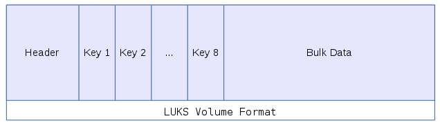

Full disk encryption on Linux is surprisingly easy once you pick up a few basic commands you are good to go. Although that being said GPG is surprisingly easy too, or at least basic usage is not that hard. But as I pointed out in The best crypto is the crypto you don't see it's still far too hard because you have to think about it and know your using it unlike full disk encryption on a Chromebook which just happens without the user even knowing.
This is Part 1 of a two part post, In part 2 of this post I'm going to run through a tutorial on Setting Up Full Disk Encryption on Debian Jessie. Although most of this post should be fairly applicable to any flavour of Linux, it's a quick primer on LUKS. There are four terms that I see used a fair bit, often used interchangeably and in subtlety wrong ways. That can make things very confusing to newcomers.
-
LUKS - LUKS (pronounced like 'lux') stands for Linux Unified Key Setup and is a standard for disk encryption. There have been many different disk encryption tools on Linux and each setting up encrypted volumes in a slightly different way meaning the encrypted volumes created with one program (or sometimes even one version of a program) were not compatible with others. So LUKS was born to be a single unified standard or specification that everyone could stick to.
-
dm-crypt - dm-crypt a kernel module used map encrypted volumes and make them look like devices so they can be mounted. It's the "reference implementation" of LUKS and as such is the de facto standard for using LUKS. But there are other tools that can mount LUKS volumes like LibreCrypt1 formerly DoxBox for Windows and dm-crypt is not just limited to LUKS volumes, it can open other encryption formats like TrueCrypt volumes.
-
cryptsetup - cryptsetup a commandline interface for managing dm-crypt. Again it's very much the standard but other tools for managing dm-crypt do exist, for exmaple there is zuluCrypt a nice GUI manager.
-
Full Disk Encryption on Linux -This is obviously a generic term that should cover all disk encryption tools on Linux but what I have often found reading forums and mailing lists is that because the LUKS/dm-crypt/cryptsetup combo is so common it's become the de facto standard and so unless people actually specify otherwise that's usually what they mean.
One of the nice things about the LUKS format is that it has the 8 key slots. The way it works is that the bulk of the data encrypted using a master key. There are eight key slots each of which can contain an encrypted copy of the master key which means if you want to change the password you don't need to re-encrypt the whole volume again with a new key, you can simply re-encrypt the master key with the new that password in the key slot. This also means you could have up to eight different passwords to decrypt the volume.

A practical use for this would be if you were handing out employee laptops, key slot one could contain a key known to the IT Department, while key slot two could contain a key set by the user. This means that the user could return their laptop and the IT Department who could decrypt it without knowing what the users password is and similarly the user can decrypt their laptop without the IT Departments key.
It also means if the user wants to change their password they can change it with out needing to re-encrypt the whole disk, instead they simply decrypt their key slot and re-encrypt the master key with their new password.
This design also has some drawbacks, one is that the master key is stored in the header and if that gets damaged, corrupted or lost for some reason you lose access to the whole volume. Better keep backups.
The other drawback is that because the master key doesn't change when you change the password anyone who knows the master key can still access the drive. So in the example with employee laptops, if IT got the laptop back, wiped key slot 2 and set it up with a new password for a new user. If the old user made a backup of the header / master key they can still access the drive even though they don't know the current password.
Now a key doesn't have to be a password it can also be a file, this can be incredibly useful because then you can add an entry into /etc/crypttab to automatically decrypt volumes. You can also set the key to be generated from /etc/urandom automatically each time you boot giving you a new non-persistent key for your swap file or other scratch drive that you don't want to survive a reboot.
-
I haven't actually used LibreCrypt, I'm just aware that it's a Windows implimentation of LUKS. ↩